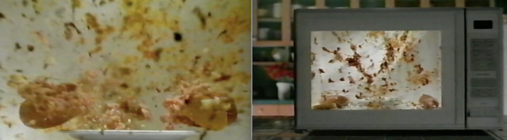

|

The Wumps |
|
|
Summary Creative group project in creating an illustrated storybook. Our project explores themes of Man vs Nature; both in humanity's lack of care for the environment, as well as the uprising of a hostile force that seeks to pry man's grip from the world.
Skills |
ScenarioIn the not so-distant past, there were a series of commercials featuring exploding hotdogs. The hotdog, often covered in toppings, was placed in the microwave, and would heat until it violently exploded. How long would a hotdog need to be heated before exploding, and what factors may affect this?
Methodology In order to conduct this experiment, I have purchased a variety of different hotdogs packages from a variety of companies. Additionally, I have also purchased a few sausages as well, to see if there is any significant difference between the two as well.
Results Unfortunately, the well-known commercials likely use some Hollywood trickery. Despite microwaving hotdogs and sausages for more than 5 minutes, none of them explode. All of them heat up to the point where the casing becomes taut, and then the casing breaks. It does not do this in a dramatic fashion, but instead with just a pop and a bit of steam. |